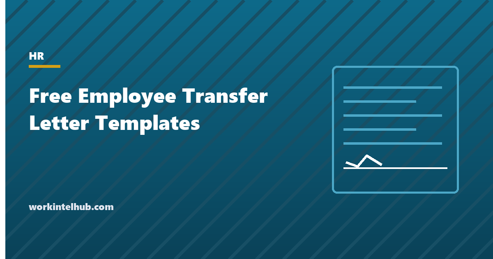

Free Employee Transfer Letter Templates

A transfer letter confirms a change in an employee's role, department, location or reporting line in writing, so that both sides know what changed and what did not. The second half matters as much as the first: most transfer disputes are about the terms that nobody mentioned, such as pay, continuous service, benefits, probation in the new role, or whether a temporary move ends when it was supposed to.
Six templates cover the common situations: an internal transfer at the same location, a transfer with relocation and its support terms, an approval of an employee's own request, a decline of a request, a temporary transfer or secondment with an end date, and an announcement to the receiving team. The Excel workbook holds a transfer register and a handover checklist.
Download the templates
Free files: Word, Excel and PDF
Three files, free, no email required. Word to edit, Excel to track, PDF to print or share.
Templates open in Microsoft Word, Excel, Google Docs and Sheets, LibreOffice and any PDF reader. Free to use and adapt for your organisation.
The six letters
| Letter | Use | Must state |
|---|---|---|
| Internal transfer | Company-initiated move, same location | New role, department, manager, date; pay and service unchanged or changed |
| Relocation | Move to another site | New pay, relocation support with amounts and repayment terms, start date |
| Request approved | Employee asked to move | Approval, terms, handover date, any probation |
| Request declined | Employee asked and cannot move now | The reason, what happens next, development offered |
| Temporary or secondment | Fixed-term move | Start and end dates, reporting line, terms, return to substantive role |
| Team announcement | Telling the receiving team | Who, from where, when, handover of duties |
What every transfer letter must settle
- The effective date and, for temporary moves, the end date and what happens then.
- Pay, grade and benefits: unchanged, or the new figures. Silence is read in the employee's favour.
- Continuous service date, which carries leave accrual, notice and vesting; confirm it is unaffected.
- Reporting line and the new job description.
- Probation or a review period in the new role, if the policy applies one; a transfer is not a new hire, so be explicit.
- Handover: what, to whom, by when.
- For relocation: each form of support, the maximum, and the repayment terms if the employee leaves within a set period.
The rules around transfers
A transfer that reduces pay, grade or status may be a constructive dismissal if the contract or handbook does not allow it, and a transfer that follows a complaint or a leave request looks like retaliation; document the business reason. Transfers across state lines change the employment law that applies, from pay frequency to leave, and payroll must change state tax withholding from the effective date; the remote work policy covers the location-change provisions. Relocation reimbursements are taxable wages under federal rules since 2018 and should be grossed up or explained. A declined transfer request should state a reason that is about the role or the business, not the person, and offer a path. The promotion announcement covers the case where the transfer is a promotion, and the job description template the new role's definition.
Key takeaways
- A transfer letter states what changed and, as importantly, what did not: pay, benefits, continuous service, reporting line, probation.
- Temporary transfers need an end date and the return to the substantive role in writing.
- Relocation letters state each form of support, its maximum and the repayment terms; reimbursements are taxable.
- Document the business reason, especially for transfers that reduce status or follow a complaint.
Frequently asked questions
What is an employee transfer letter?
A letter from the employer confirming a change in an employee's role, department, location or reporting line, the effective date, and the terms that change or stay the same. It is kept in the personnel file and, for transfers the employee must accept, countersigned.
What should a transfer letter include?
Current and new role, department, location and manager; the effective date and any end date; pay, grade and benefits, changed or unchanged; continuous service confirmation; probation or review period if any; handover arrangements; and for relocations, the support offered and repayment terms.
Can an employer transfer an employee without consent?
Within the terms of the contract or handbook, usually yes for role or department changes at the same location and pay. Transfers that reduce pay or status, or require relocation, generally need agreement, and imposing them can amount to constructive dismissal. Document the business reason either way.
Is relocation assistance taxable?
Under federal law since 2018, employer-paid moving expenses and reimbursements are taxable wages for most employees. Many employers gross up the payment; the letter should say which applies.
How do I decline a transfer request?
In writing, with a reason that is about the role or the business (no vacancy, skills required, business need), what will happen next (interest kept on file, notified of vacancies), and any development offered. Keep the tone open; a declined request handled badly is a resignation.